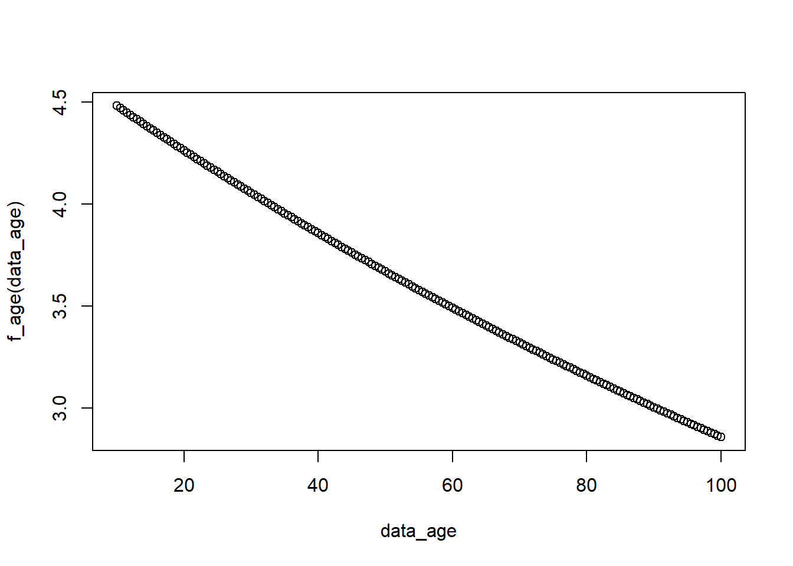
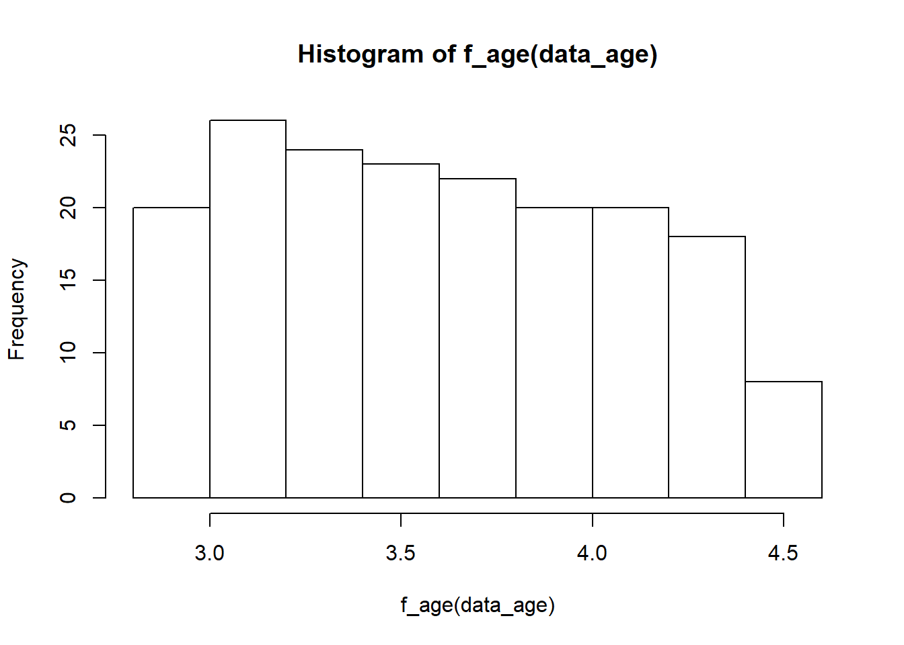
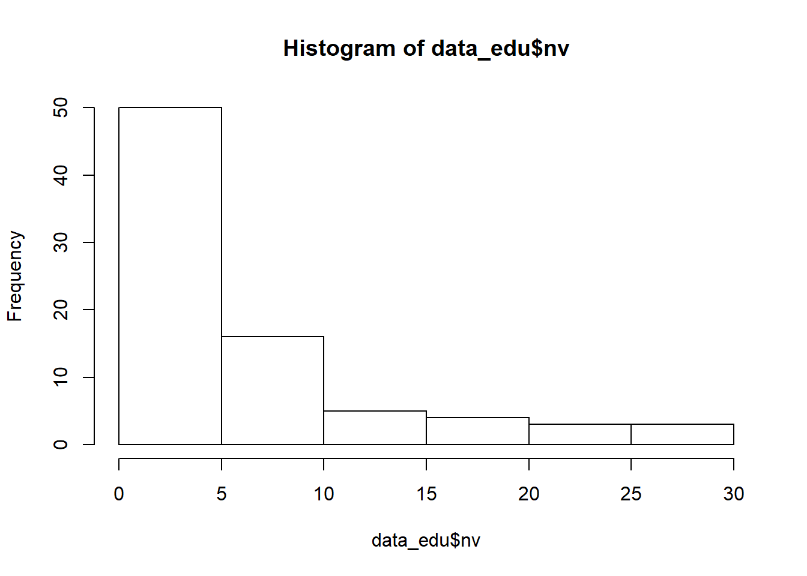

Chapter 6 Poisson Regression
6.1 Basic idea
The following is based on the lecture note of https://bookdown.org/roback/bookdown-BeyondMLR/ch-poissonreg.html
There is also some R code related to this.
data_HH <- read.csv("https://raw.githubusercontent.com/proback/BeyondMLR/master/data/fHH1.csv")
head(data_HH)## X location age total numLT5 roof
## 1 1 CentralLuzon 65 0 0 Predominantly Strong Material
## 2 2 MetroManila 75 3 0 Predominantly Strong Material
## 3 3 DavaoRegion 54 4 0 Predominantly Strong Material
## 4 4 Visayas 49 3 0 Predominantly Strong Material
## 5 5 MetroManila 74 3 0 Predominantly Strong Material
## 6 6 Visayas 59 6 0 Predominantly Strong Material\[log (\lambda_X) =\beta_0+\beta_1 X\] \[log (\lambda_{X+1}) =\beta_0+\beta_1 (X+1)\]
Thus,
\[log (\lambda_{X+1})-log (\lambda_X) =(\beta_0+\beta_1 (X+1))-(\beta_0+\beta_1 X)\]
Thus,
\[log (\frac{\lambda_{X+1}}{\lambda_X}) =\beta_1\]
Thus,
\[\frac{\lambda_{X+1}}{\lambda_X} =e^{\beta_1}\]
Note that, \(\lambda\) here is the mean. It is poisson regression, and the parameter is the mean. Thus, \(\frac{\lambda_{X+1}}{\lambda_X} =e^{\beta_1}\) suggests the ratio change in the DV as the IV change in one unit.
\[log (\hat{\lambda}) =b_0+b_1 Age\]
##
## Call:
## glm(formula = total ~ age, family = poisson, data = data_HH)
##
## Deviance Residuals:
## Min 1Q Median 3Q Max
## -2.9079 -0.9637 -0.2155 0.6092 4.9561
##
## Coefficients:
## Estimate Std. Error z value Pr(>|z|)
## (Intercept) 1.5499422 0.0502754 30.829 < 2e-16 ***
## age -0.0047059 0.0009363 -5.026 5.01e-07 ***
## ---
## Signif. codes: 0 '***' 0.001 '**' 0.01 '*' 0.05 '.' 0.1 ' ' 1
##
## (Dispersion parameter for poisson family taken to be 1)
##
## Null deviance: 2362.5 on 1499 degrees of freedom
## Residual deviance: 2337.1 on 1498 degrees of freedom
## AIC: 6714
##
## Number of Fisher Scoring iterations: 5\[\frac{\lambda_{Age+1}}{\lambda_{Age}} =e^{\beta_1}=e^{-0.0047}=0.995\]
But, what does it mean? It is a bit tricky. But, we can make some modification to help us understand.
\[\lambda_{Age+1} =0.995 \lambda_{Age}\] \[\lambda_{Age+1} - \lambda_{Age}=0.995 \lambda_{Age}- \lambda_{Age}=-0.005 \lambda_{Age}\] Thus, we can understand that, the difference in the household size mean by changing 1 unit of age (i.e., \(\lambda_{Age+1} - \lambda_{Age}\)) is \(-0.005 \lambda_{Age}\).
That is, the difference in the household size mean by changing 1 unit of age (i.e., \(\lambda_{Age+1} - \lambda_{Age}\)) is a decrease of 5% of \(\lambda_{Age}\).
We can then calculate the confidence interval.
\[(\hat{\beta_1}-Z*SE(\hat{\beta_1}), \hat{\beta_1}+Z*SE(\hat{\beta_1}))\]
\[(-0.0047-1.96*0.00094,-0.0047+1.96*0.00094)=(−0.0065,−0.0029)\]
We can then plug them back to the exponential.
## [1] 0.9935211## [1] 0.9971042\[(e^{−0.0065},e^{−0.0029})=(0.9935,0.9971)\]
You can also get the confidence interval directly use R code
## Waiting for profiling to be done...## 2.5 % 97.5 %
## (Intercept) 1.451170100 1.648249185
## age -0.006543163 -0.002872717## Waiting for profiling to be done...## 2.5 % 97.5 %
## (Intercept) 4.2681057 5.1978713
## age 0.9934782 0.9971314Note that, we use original beta to construct a confidence interval and then exponentiate the endpoints is due to the fact that the oringal one is more close to normal distribution.
6.2 Trying to understand
With \(\hat{\beta_0} = 1.55\) and \(\hat{\beta_1}=-0.005\), we can write down the following. I also simulated the data and showed the relationship between X and Y. As we can see the figure, the relationship is pretty linear. Thus, something to keep in mind, the poisson distribution we typically see is the histogram of Y, rather than the relationship between X and Y.
\[log(\hat{\lambda})=1.55-0.005 Age\] \[\hat{\lambda}=e^{1.55-0.005 Age}\]
## data_age
## [1,] 10.0 4.481689
## [2,] 10.5 4.470499
## [3,] 11.0 4.459337
## [4,] 11.5 4.448202
## [5,] 12.0 4.437096
## [6,] 12.5 4.426017
## [7,] 13.0 4.414965
## [8,] 13.5 4.403942
## [9,] 14.0 4.392946
## [10,] 14.5 4.381977
## [11,] 15.0 4.371036
## [12,] 15.5 4.360122
## [13,] 16.0 4.349235
## [14,] 16.5 4.338376
## [15,] 17.0 4.327543
## [16,] 17.5 4.316738
## [17,] 18.0 4.305960
## [18,] 18.5 4.295208
## [19,] 19.0 4.284483
## [20,] 19.5 4.273786
## [21,] 20.0 4.263115
## [22,] 20.5 4.252470
## [23,] 21.0 4.241852
## [24,] 21.5 4.231261
## [25,] 22.0 4.220696
## [26,] 22.5 4.210157
## [27,] 23.0 4.199645
## [28,] 23.5 4.189159
## [29,] 24.0 4.178699
## [30,] 24.5 4.168265
## [31,] 25.0 4.157858
## [32,] 25.5 4.147476
## [33,] 26.0 4.137120
## [34,] 26.5 4.126791
## [35,] 27.0 4.116486
## [36,] 27.5 4.106208
## [37,] 28.0 4.095955
## [38,] 28.5 4.085728
## [39,] 29.0 4.075527
## [40,] 29.5 4.065351
## [41,] 30.0 4.055200
## [42,] 30.5 4.045075
## [43,] 31.0 4.034975
## [44,] 31.5 4.024900
## [45,] 32.0 4.014850
## [46,] 32.5 4.004825
## [47,] 33.0 3.994826
## [48,] 33.5 3.984851
## [49,] 34.0 3.974902
## [50,] 34.5 3.964977
## [51,] 35.0 3.955077
## [52,] 35.5 3.945201
## [53,] 36.0 3.935351
## [54,] 36.5 3.925525
## [55,] 37.0 3.915723
## [56,] 37.5 3.905946
## [57,] 38.0 3.896193
## [58,] 38.5 3.886465
## [59,] 39.0 3.876761
## [60,] 39.5 3.867081
## [61,] 40.0 3.857426
## [62,] 40.5 3.847794
## [63,] 41.0 3.838187
## [64,] 41.5 3.828603
## [65,] 42.0 3.819044
## [66,] 42.5 3.809508
## [67,] 43.0 3.799996
## [68,] 43.5 3.790508
## [69,] 44.0 3.781043
## [70,] 44.5 3.771603
## [71,] 45.0 3.762185
## [72,] 45.5 3.752792
## [73,] 46.0 3.743421
## [74,] 46.5 3.734075
## [75,] 47.0 3.724751
## [76,] 47.5 3.715451
## [77,] 48.0 3.706174
## [78,] 48.5 3.696920
## [79,] 49.0 3.687689
## [80,] 49.5 3.678481
## [81,] 50.0 3.669297
## [82,] 50.5 3.660135
## [83,] 51.0 3.650996
## [84,] 51.5 3.641880
## [85,] 52.0 3.632787
## [86,] 52.5 3.623716
## [87,] 53.0 3.614668
## [88,] 53.5 3.605643
## [89,] 54.0 3.596640
## [90,] 54.5 3.587659
## [91,] 55.0 3.578701
## [92,] 55.5 3.569766
## [93,] 56.0 3.560853
## [94,] 56.5 3.551962
## [95,] 57.0 3.543093
## [96,] 57.5 3.534246
## [97,] 58.0 3.525421
## [98,] 58.5 3.516619
## [99,] 59.0 3.507838
## [100,] 59.5 3.499080
## [101,] 60.0 3.490343
## [102,] 60.5 3.481628
## [103,] 61.0 3.472935
## [104,] 61.5 3.464263
## [105,] 62.0 3.455613
## [106,] 62.5 3.446985
## [107,] 63.0 3.438379
## [108,] 63.5 3.429793
## [109,] 64.0 3.421230
## [110,] 64.5 3.412687
## [111,] 65.0 3.404166
## [112,] 65.5 3.395666
## [113,] 66.0 3.387188
## [114,] 66.5 3.378730
## [115,] 67.0 3.370294
## [116,] 67.5 3.361879
## [117,] 68.0 3.353485
## [118,] 68.5 3.345111
## [119,] 69.0 3.336759
## [120,] 69.5 3.328428
## [121,] 70.0 3.320117
## [122,] 70.5 3.311827
## [123,] 71.0 3.303558
## [124,] 71.5 3.295309
## [125,] 72.0 3.287081
## [126,] 72.5 3.278874
## [127,] 73.0 3.270687
## [128,] 73.5 3.262520
## [129,] 74.0 3.254374
## [130,] 74.5 3.246248
## [131,] 75.0 3.238143
## [132,] 75.5 3.230058
## [133,] 76.0 3.221993
## [134,] 76.5 3.213948
## [135,] 77.0 3.205923
## [136,] 77.5 3.197918
## [137,] 78.0 3.189933
## [138,] 78.5 3.181968
## [139,] 79.0 3.174023
## [140,] 79.5 3.166098
## [141,] 80.0 3.158193
## [142,] 80.5 3.150307
## [143,] 81.0 3.142441
## [144,] 81.5 3.134595
## [145,] 82.0 3.126768
## [146,] 82.5 3.118961
## [147,] 83.0 3.111174
## [148,] 83.5 3.103405
## [149,] 84.0 3.095657
## [150,] 84.5 3.087927
## [151,] 85.0 3.080217
## [152,] 85.5 3.072526
## [153,] 86.0 3.064854
## [154,] 86.5 3.057202
## [155,] 87.0 3.049568
## [156,] 87.5 3.041954
## [157,] 88.0 3.034358
## [158,] 88.5 3.026782
## [159,] 89.0 3.019224
## [160,] 89.5 3.011686
## [161,] 90.0 3.004166
## [162,] 90.5 2.996665
## [163,] 91.0 2.989183
## [164,] 91.5 2.981719
## [165,] 92.0 2.974274
## [166,] 92.5 2.966848
## [167,] 93.0 2.959440
## [168,] 93.5 2.952050
## [169,] 94.0 2.944680
## [170,] 94.5 2.937327
## [171,] 95.0 2.929993
## [172,] 95.5 2.922677
## [173,] 96.0 2.915379
## [174,] 96.5 2.908100
## [175,] 97.0 2.900839
## [176,] 97.5 2.893596
## [177,] 98.0 2.886371
## [178,] 98.5 2.879164
## [179,] 99.0 2.871975
## [180,] 99.5 2.864804
## [181,] 100.0 2.857651

6.3 Deviance
basic_model <- glm(total ~ 1, family = poisson, data = data_HH)
deviance_1 <- anova(basic_model, result_1, test = "Chisq")
deviance_1## Analysis of Deviance Table
##
## Model 1: total ~ 1
## Model 2: total ~ age
## Resid. Df Resid. Dev Df Deviance Pr(>Chi)
## 1 1499 2362.5
## 2 1498 2337.1 1 25.399 4.661e-07 ***
## ---
## Signif. codes: 0 '***' 0.001 '**' 0.01 '*' 0.05 '.' 0.1 ' ' 16.4 Overdispersion (using another example)
data_edu<-read.csv("https://raw.githubusercontent.com/proback/BeyondMLR/master/data/c_data.csv")
head(data_edu)## Enrollment type nv nvrate enroll1000 region
## 1 5590 U 30 5.36672630 5.590 SE
## 2 540 C 0 0.00000000 0.540 SE
## 3 35747 U 23 0.64341064 35.747 W
## 4 28176 C 1 0.03549120 28.176 W
## 5 10568 U 1 0.09462528 10.568 SW
## 6 3127 U 0 0.00000000 3.127 SW
results_3<- glm(nv ~ type + region, family = poisson,
offset = log(enroll1000), data = data_edu)
summary(results_3)##
## Call:
## glm(formula = nv ~ type + region, family = poisson, data = data_edu,
## offset = log(enroll1000))
##
## Deviance Residuals:
## Min 1Q Median 3Q Max
## -4.5697 -1.9079 -0.7233 0.8738 8.4564
##
## Coefficients:
## Estimate Std. Error z value Pr(>|z|)
## (Intercept) -1.60161 0.17120 -9.355 < 2e-16 ***
## typeU 0.34011 0.13234 2.570 0.01017 *
## regionMW 0.09942 0.17752 0.560 0.57547
## regionNE 0.78109 0.15305 5.103 3.33e-07 ***
## regionSE 0.87668 0.15314 5.725 1.04e-08 ***
## regionSW 0.50251 0.18508 2.715 0.00663 **
## regionW 0.27324 0.18741 1.458 0.14484
## ---
## Signif. codes: 0 '***' 0.001 '**' 0.01 '*' 0.05 '.' 0.1 ' ' 1
##
## (Dispersion parameter for poisson family taken to be 1)
##
## Null deviance: 491.00 on 80 degrees of freedom
## Residual deviance: 426.01 on 74 degrees of freedom
## AIC: 657.89
##
## Number of Fisher Scoring iterations: 6results_4 <- glm(nv ~ type + region, family = quasipoisson,
offset = log(enroll1000), data = data_edu)
summary(results_4)##
## Call:
## glm(formula = nv ~ type + region, family = quasipoisson, data = data_edu,
## offset = log(enroll1000))
##
## Deviance Residuals:
## Min 1Q Median 3Q Max
## -4.5697 -1.9079 -0.7233 0.8738 8.4564
##
## Coefficients:
## Estimate Std. Error t value Pr(>|t|)
## (Intercept) -1.60161 0.48312 -3.315 0.00142 **
## typeU 0.34011 0.37347 0.911 0.36542
## regionMW 0.09942 0.50097 0.198 0.84324
## regionNE 0.78109 0.43191 1.808 0.07460 .
## regionSE 0.87668 0.43216 2.029 0.04609 *
## regionSW 0.50251 0.52230 0.962 0.33913
## regionW 0.27324 0.52887 0.517 0.60694
## ---
## Signif. codes: 0 '***' 0.001 '**' 0.01 '*' 0.05 '.' 0.1 ' ' 1
##
## (Dispersion parameter for quasipoisson family taken to be 7.963687)
##
## Null deviance: 491.00 on 80 degrees of freedom
## Residual deviance: 426.01 on 74 degrees of freedom
## AIC: NA
##
## Number of Fisher Scoring iterations: 6## Analysis of Deviance Table
##
## Model 1: nv ~ type + region
## Model 2: nv ~ type + region
## Resid. Df Resid. Dev Df Deviance F Pr(>F)
## 1 74 426.01
## 2 74 426.01 0 0